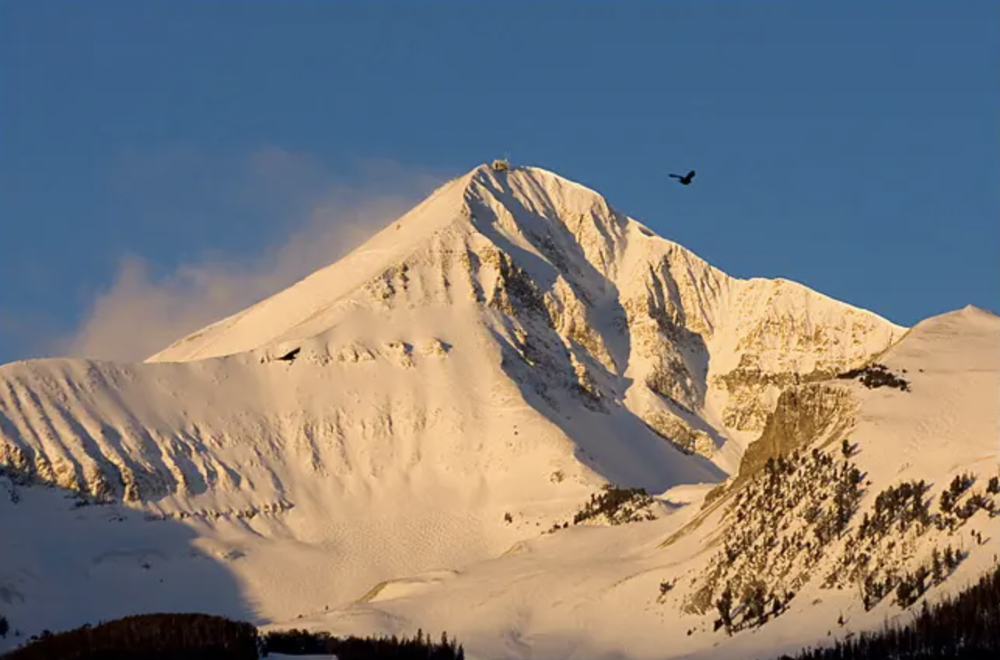
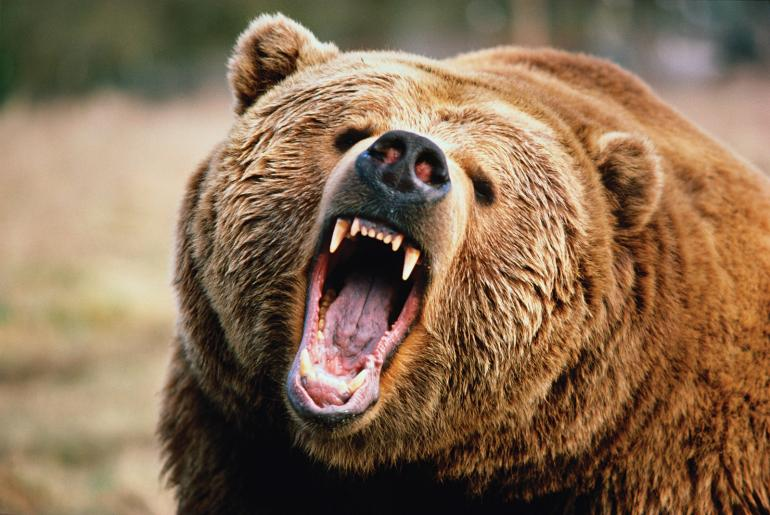
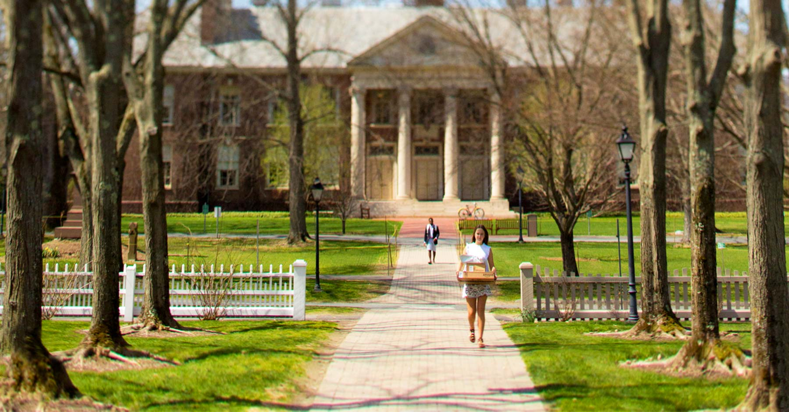

I am from Bozeman, Montana. Bozeman is known for its wildlife and scenery. It is nearby Yellowstone and Glacier National Parks. It is also close to epic skiing and snowboarding at resorts like Big Sky and Bridger Bowl.
Some of the wildlife native to this area include moose, bighorn sheep, and elk. There is plenty to do in Montana. We don't have impresive malls or Trader Joe's, but there is an endless amount to do outside. Tourists come from far and wide to hunt, fish, hike and camp. If you go camping, a common pastime in Montana, you should bring (and be prepared to use) bearspray because you will be in bear country. Don't leave your food, including toothpaste, close to where you sleep at night!
I attended a rural (out in the country) K-8th grade school in Montana. I enjoyed all of my classes, but especially art and math. I went to my local high school after that, but only for two years.
I decided to go to boarding school in Massachusetts . I was hoping to take more challenging math classes, to refine my writing, and to learn professionalism. My school, Deerfield Academy, had a strict dress code and kept me on an intense schedule. Right around this time, I found that programming is the perfect mix of math and art. It challenges me to come up with creative solutions to problems, which is why I started taking programming classes at my new school. I quickly realized that I wanted to major in computer science in college.

In my senior year of high school, I applied and was granted admission to Caltech, a school that loves math and science as much as I do. It was an easy decision where I would attend university. I am a senior now and the classes I am currently taking are:
- art history
- drawing & painting
- web development
- computational mathematics
- machine learning
- hiking
It's going to be a great term and I am excited to be graduating in June!
In my free time, I like to watch reality tv and listen to heavy metal music. I also enjoy collecting posters for my room, crocheting, and sewing. I'm a Capricorn-my birthday is on Christmas Day! I also have a cat named Waffle. Click here to view the Waffle page.
Since I grew up close to two ski areas, I ski raced on the weekends. My favorite events were speed events where skiers frequently reached speeds of over 60 miles per hour. I spent quite a bit of time practicing racing through gates and also skiiing black diamonds, through chutes, and off cliffs.

I played soccer from a young age as well. My position was goalkeeper because I got to direct the whole team and make dramatic diving saves. The weather in Montana is frequently not very pleasant. I played in rain, mud, and even snow! I was excited to be a part of the Caltech women's soccer team and even broke two of the school records!